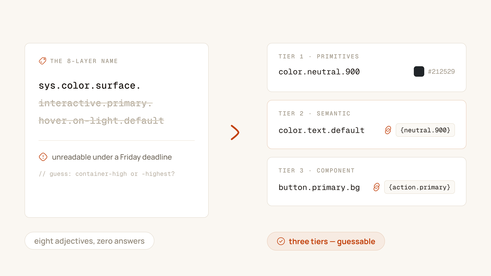
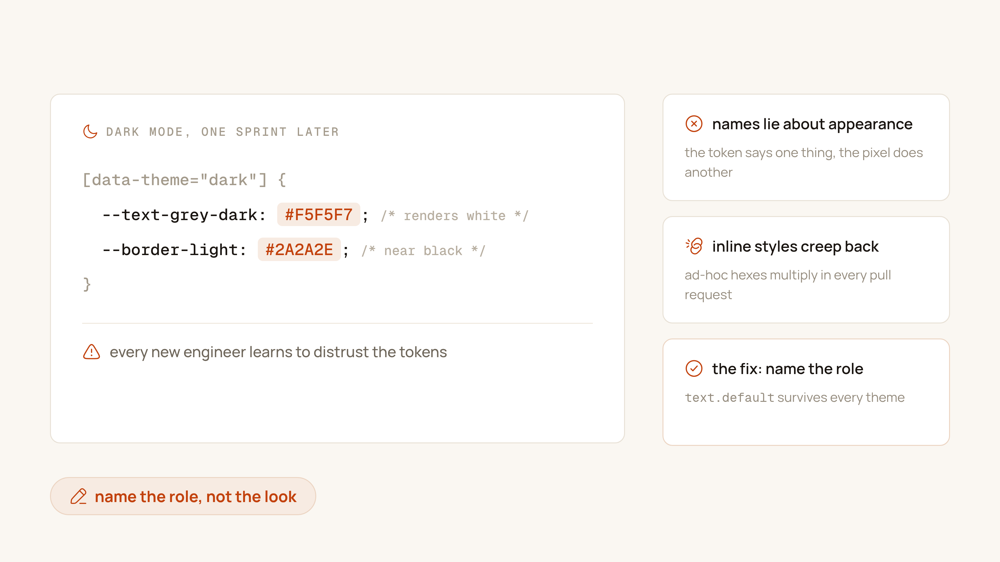
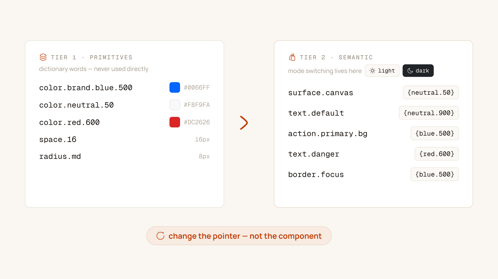

Every designer who gets excited about design tokens goes through the same arc. You discover Token Studio or Figma Variables, read twenty articles on taxonomy, feel like a librarian of pure digital order — and create an eight-layer naming scheme:
sys.color.surface.interactive.primary.hover.on-light.default
You export the JSON, deliver a proud presentation to engineering, and hand off the first batch of screens. Three sprints later you inspect a pull request and discover the frontend developer has hardcoded #1A1A1A. Why? Because when you're building a payment table under a Friday release deadline, nobody has the patience to parse eight layers of abstract adjectives to decide between surface-container-high and surface-container-highest.
If an engineer can't guess a token name without opening the documentation, the architecture has failed — not the engineer.

Three ways token systems die in production
Before designing a naming schema, study the failure modes. Across the systems I've shipped and refactored, token initiatives collapse in exactly three ways:
1. The Material Design 3 copycat trap
Google's Material 3 token architecture is brilliant — for an operating system powering thousands of disparate apps. When a 15-person product team copies terms like on-surface-variant, surface-container-low, and outline-variant into a bespoke B2B SaaS tool, disaster follows. Nobody intuitively remembers which layer is "low" versus "lowest," so designers guess. Within two months, three designers are using three different background tokens for identical cards.
2. The visual description trap
When teams start from a brand book, tokens get named after how they look: color-blue-500, text-grey-dark, border-light. Everything seems fine — until the company asks for dark mode. Dark grey text must invert to white; light grey borders become charcoal. You end up shipping this:
[data-theme="dark"] {
--text-grey-dark: #F5F5F7; /* "dark" — renders white */
--border-light: #2A2A2E; /* "light" — near black */
}Every engineer who joins the company reads that code, shakes their head, and starts writing ad-hoc inline styles — because the existing tokens make no sense. The name described a look, and the look changed.

text.default survives every theme.3. The context explosion trap
Trying to prevent regressions, a designer creates hyper-specific tokens for every element: sidebar-header-nav-link-hover-color, table-row-selected-badge-border. You end up with 2,400 tokens, 95% of which point to the same blue hex. When marketing asks to change the brand accent, you update forty tokens — because nobody grouped anything by semantic role.
The 3-tier hierarchy that actually works
Through shipping and refactoring design systems across payment gateways (PGWay), energy commerce (priWatt), and enterprise SaaS, I've landed on a strict three-tier model. It's the sweet spot between scalability and developer adoption: global primitives at the foundation, semantic intent in the middle, and strictly constrained component overrides at the top.
Tier 1: Global primitives
These are your dictionary words. They describe what a value is, completely detached from where it's used — and they should never be consumed directly in UI components.
- Color: numeric step scales (50–950 or 100–900). Numeric scales give predictable perceptual increments when tuning contrast.
- Spacing & radius: t-shirt sizing (
xs–xl) or a 4px modular scale (space-4,space-8,space-16).
/* Tier 1: Global definitions */
color.brand.blue.500: #0066FF
color.neutral.50: #F8F9FA
color.neutral.900: #212529
color.red.600: #DC2626
space.4: 4px
space.8: 8px
space.16: 16px
radius.sm: 4px
radius.md: 8px
radius.full: 9999pxTier 2: Semantic tokens — where modes live
This is the workhorse of the system. Semantic tokens describe intent: what functional purpose does this color, border, or spacing serve? Mode switching — light vs. dark, high contrast, brand theming — happens here and only here. The component markup never changes; the pointer resolves to a different primitive.
/* Tier 2: Semantic mappings, light theme */
color.surface.canvas: {color.neutral.50}
color.text.default: {color.neutral.900}
color.text.danger: {color.red.600}
color.border.focus: {color.brand.blue.500}
color.action.primary.bg: {color.brand.blue.500}
color.action.primary.bg-hover: #0052CC
/* The exact same tokens, re-mapped for dark */
[data-theme="dark"] {
color.surface.canvas: #0F1115
color.text.default: #F9FAFB
color.text.danger: #F87171
color.action.primary.bg: #2563EB
}
Tier 3: Component tokens — the guardrail tier
Component tokens alias a semantic token to an isolated component property: btn.primary.bg: {color.action.primary.bg}. The golden rule: don't create them by default. Build components on Tier 2 tokens directly, and introduce a Tier 3 token only when a component has a genuinely unique sub-element (a slider track, a tooltip notch) that would pollute the global semantic space — or when white-label configs require overriding that exact component and nothing else. Create component tokens for every button, badge, and modal on day one, and you'll drown in 2,000 mappings before your first feature ships.
A naming grammar that scales
For autocomplete to work in VS Code and Figma alike, every name must follow one predictable left-to-right order:
[category] · [context] · [role] · [state]
- Category: color, space, font, radius, elevation, motion
- Context: surface, text, border, icon, action, layout
- Role: default, muted, brand, success, warning, danger
- State: hover, active, pressed, focus, disabled, subtle
Bad names describe appearance; production-grade names describe intent:
❌ text-grey-dark → ✅ color.text.default
❌ primary-btn-blue → ✅ color.action.primary.bg
❌ danger-box-border → ✅ color.border.danger
❌ sidebar-padding-16 → ✅ space.layout.sidebar-gutter
❌ card-shadow-big → ✅ elevation.overlay.modal
❌ light-mode-hover-color → ✅ color.action.primary.bg-hoverOne name in Figma, one name in code
The single greatest cause of design system decay is nomenclature divergence. If the Figma panel says Action / Primary / Hover while the React codebase uses theme.colors.brandPrimaryHover, the system is already fracturing — and every sync meeting becomes a translation exercise.
In our pipeline at priWatt, the contract is strict: tokens are authored in Token Studio / Figma Variables in dot-notation, committed to a shared repository as structured JSON, and compiled by Style Dictionary on merge into variables.css, tokens.ts, and native mobile targets. When an engineer opens the IDE, autocomplete mirrors Figma exactly:
.button-primary {
background-color: var(--color-action-primary-bg);
color: var(--color-action-primary-text);
border-radius: var(--radius-interactive-md);
}
.button-primary:hover {
background-color: var(--color-action-primary-bg-hover);
}Deprecate with pointers, not deletions
Systems evolve, and eventually you'll rename or merge tokens. Delete a token from the JSON and you break builds across multiple squads. The professional path is aliasing with telemetry: keep the old name as a pointer to the new canonical token, flagged for removal in a future major version — and let your build step or ESLint plugin warn on every usage, with a codemod to migrate:
:root {
--color-surface-panel: #FFFFFF; /* canonical */
/* DEPRECATED in v2.4, removed in v3.0 */
--color-bg-white: var(--color-surface-panel);
}The litmus test
A token convention isn't successful because it looks elegant on a presentation slide. It's successful when a newly hired engineer can build an entire multi-step checkout form — choosing colors, borders, and spacing purely from IDE autocomplete — and pass visual review on the first try, without a single designer asking: "Hey, what hex code did you use here?"